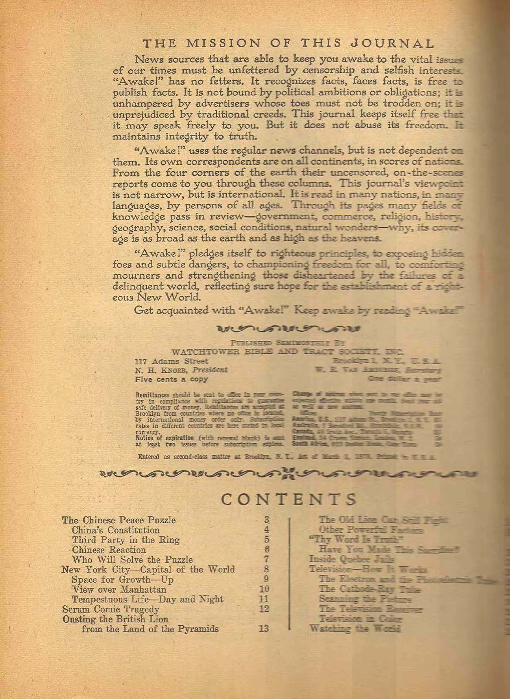
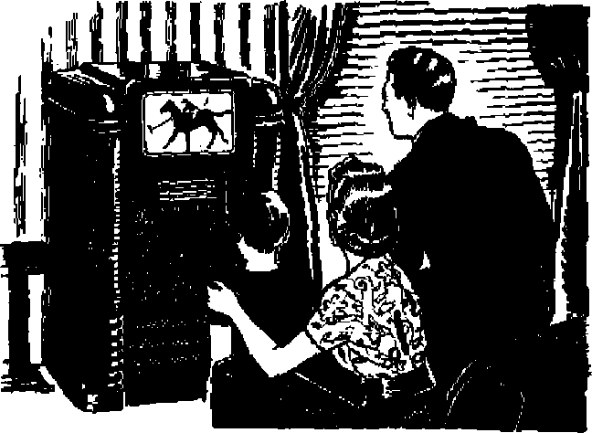
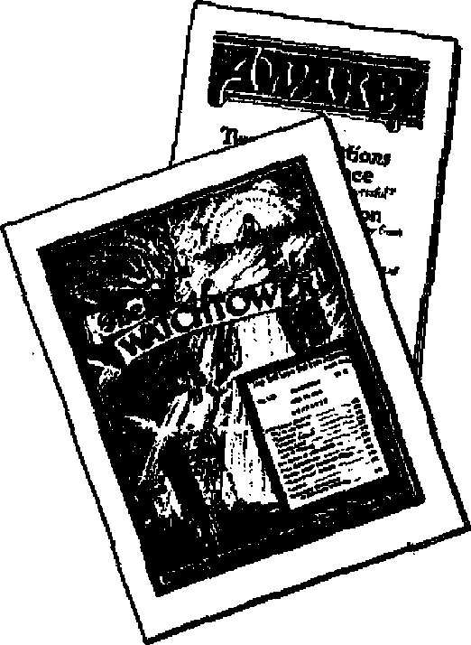

New York City—Capital of the World
Ousting the British Lion from the Land of the Pyramids
Television—How It Works
Volume XXVIII
Brooklyn, N.V., February 23, IM?
NvmBftr 4
TWENTY long years of war in China, and still no sign of peace! That is the grim reality that 450,000,000 people of the world must face in this year 1947- In spite of the fact that American envoys have entered the scene as peacemakers bearing olive branches, the situation has changed little from what it was two decades ago.
It war in 1027 that Chiang Kai*ahtk took to the field and pushed back the rising tide of opposition that was mounting against the oppressive measures of the landlord-merchant class which controlled the government Initial success in driving the “bandits” into the hills made Ctoang a powerful force in the Nationalist government However, such demonstration of military might did not Beetle the basic issues. Krom their strongholds the opposition, which is designated as the Chinese Communists, organized counter-offensives, and during the years that followed they continued to grow both in numbers and in military strength. Politically, they were known au Kung chang-tang, which literally means the “share-property party”.
Chiang's political party, called the Kuomintang, literally meaning the “nation's people's party”, hence the national party* thought themselves strong enough in 1936 to begin the writing of a constitution. November 12, 1937, was set as the date for the drafting of such a basks
FMKIMEF ff, w
law. But the Japanese postponed such assembly by launching their “conquer China ’ campaign in July, 1937. Quickly the Chinese civil war was converted into a national war with both factions fighting a common foe.
As the years of World War II dragged on China's political differences lay so dormant it seemed that once the war with Japan ended the setting up of a pennofnl government for tho impever ished Chinese would be an easy matter. To this end preliminary negotiations were held in 1944 and 1945, but these only proved that hopes for an early settlement were too optimistic.
New hopes were raised with the downfall of the Japanese empire in the sum* mer of 1945. Russia, which had been sympathetic with the Chinese Communists, signed a 30-year Treaty of Friendship with the Nationalist government. But the drafting of the new constitution that was set for November 12, 1945, was postponed ; and as a result a new element was introduced into the formula in an effort to dissolve these incompatible differences of opinion, President Truman appointed General Marshall, retired chief of staff of the United States Army, (now secretary of state), to act as special mediator.
Jamary Truce
Marshall arrived in China December 20,1945. Within a few weeks he had both parties' signature on a document that called for an immediate truce In
B
hostilities and the setting up of a political consultative council that was -charged with the job of drawing out the blueprint for an all-party government. Besides limiting the power of the Kuomintang and unifying both, military forces into a single army the reorganization council was to deal with such ticklish problems as putting all politics on a democratic basis, giving full freedom to women, reducing farm rent, interest rates and taxes, and guaranteeing full freedom of the press. Marshall’s prestige as a mediatory seemed very high on January 10, 1946, when representatives of the Kuomintang and Communists signed this agreement, which also stated in no uncertain terms that “all hostilities will cease immediately”.
Scarcely had the news wires told about the January truce when reports were heard that lighting had again broken out, each side charging the other with violation of the “cease fire” terms. For two months efforts were made to stop the fighting. On March 27 a second “cease fire” order went out. In April General Marshall returned to Chungking in a second attempt to bring peace. On June 7 a third “cease fire” order was issued, with each side claiming, three weeks later, that they had to return fire because the other side had violated the armistice. ; -More negotiations between the two factions followed. It seemed that the liberals on both sides were willing to stop their fighting long enongb to set up peace machinery but the selfish, reactionary forces in the Kuomintang were absolutely unbending in their determination to hold the power of government they had in their grip.
By the middle of July Chiang laid aside all pretenses of keeping the truce and announced a “railway campaign” to gain cunuol of the Central China-Man-chutia lines. In the same ’ riionth Dr. jjeighton Stuart, who had served as a Rresbyterian missionary in China for forty years, was appointed as the new ambassador in place of Hurley to aid Marshalls peace efforts. Thereafter the fighting opened up along a 500-mile front. Also the nearest thing to an open declaration of war in this undeclared war was issued by the Communists when they called for a general mobilization.
As peacemakers both Marshall and Stuart had failed, and they knew it. In a joint statement they said: “It appears impossible for the two parties to reach a settlement . . . which would permit issuance of a general order for complete cessation of hostilities in all China.”
Chino's Constitution
Meantime, while all the fighting was going on, preparations were being made for an Assembly on November 12, 1946, that would draw up a constitution. In January, 1946, it was decided to allow each political party a fixed number of delegates: the Kuomintang, 220; the Communists, 190; the Democratic League, 120; and all others 170. Tbe Democratic League, which is made up of quite a number of Chinese intellectuals, said outright that they would boycott the Nanking Assembly. Apparently they changed their minds later. The Communists insisted that certain conditions would first have to be met, which were not, so they didn’t attend-
After three days’ grace the Assembly opened, on November 15, 1946, in Nanking with the declaration by Chiang that it was the “greatest moment in the history of the Chinese Republic”. Forty-one days later the 1,486 delegates that had come from such out-of-the-way places as Mongolia and Tibet finished the final reading of the new constitution on Christmas Day. It will go into effect December 25, 1947.
The Communists say they represent tbe land-hungry peasant class who desire to see the large estates divided up. The Kuomintang, on the other hand, are made up of the bourgeoisie aud land-
lords who fiercely fight against any attempt to reduce their hold on the property and wealth of the country.
In their ten-point program set forth at the last National Congress of Chinese Communists, April, 1945, they said they were fighting for such things as the abolition of one-party government, guaranteed for freedom of speech, assembly and belief, reformation in land ownership, abolition of illiteracy, and curbs on foreign investment in Chinese industry.
The program of tbe Kuomintang, represented in the new constitution, does not parallel the Communist platform as one might think when casually reading its 175 articles. While having an outline of guarantees for freedom, its ambiguities in meaning will often leave large room for government interpretation, and its loopholes are big enough to allow the Kuomintang to crawl through.
For example, the new constitution provides for free elections. However, it will be very difficult through simple elections to unsaddle the dictatorship that now holds the reins of government, especially when such dictatorship is determined to remain in power even to the extent of using money from the national treasury as a campaign fund for the Kuomintang. Such an election will be nothing different from Hitler’s “free” elections. How strong do you think the “guarantee” of freedom of speech and press is under this constitution when it says that such freedoms cannot be restricted "except when it is necessary to prevent infringement of the freedom of other persons, avert an urgent crisis, maintain social order or promote public interests”?
The government that created this constitution, two days after it was adopted, gave its people a sample of the "freedom” they can expect when it goes into effect. The Chinese ministry of the interior, without giving any reason, issued an order on December 27 forbidding the sale of two popular books, The Challenge of Red China and Thunder Out of China.
It is manifest that under such a constitution conditions will remain very much the same as they are now, a struggle between the masses and the classes. The masses of China’s population are tillers of the soil, 331,000,000 of them.
Unless the constitution will give to this vast population a greater measure of peace and freedom than they have now it will not succeed; Communists will continue to recruit membership from among this oppressed and unhappy lot, and the pot of civil strife will continue to boil.
As the Russians removed their troops from Manchuria Communist forces moved in and took over, thus enlarging their control to cover one-third of China’s area with its population of 180,000,000, two-fifths of China’s total people. The military strength of the Communists has been estimated at 1,100,000 regular troops and 1,000,000 poorly equipped militia. This is in comparison with the Nationalist forces of 2,200,000. With two opposing forces of this strength the struggle in China might go on indefinitely if it were not for another, and most important force, namely, American intervention.
Third Party in the Ring
The war in China is like a prize fight that has dragged on and on because neither opponent has had the power to knock the other out. There is one way of ending such fights, and that is for the referee to jump in and help one of the contestants. This is exactly what Uncle Sam, the referee in this fight, has done. Reports tell how the United States has supplied lend-lease equipment and material to the forces of the Kuomintang government; how American-made land? ing barges have been used to transport Nationalist troops to fight against the Communists; how American-made planes have bombed Communist positions; how American-made bombs have killed civilian women and children; how American
army officers and men h$ve reorganized and trained Nationalist army and navy officers. Such a course placed the United States in the unique position as a “neutral" peacemaker while at the same time supporting the authoritarian, ruling clique that fights against the people of the soil. This probably explains why Truman specially chose a high-ranking military man to play this double role in the postwar war in China.
American foreign policy in the orient ig not a deep secret, though it is usually explained in diplomatic language. In a few words, the State Department endeavors to expand American influence and strengthen its position in foreign countries. Obviously, American influence would suffer greatly in the China theater should the Communists win out, for in such an event China would lean toward Russia as a source of supply and would close her door to American business ambitions. So to retain China as a great export market for American business in the years to come the forces of the United States were used to prevent such a victory.
The Kuomintang makes liberal concessions in return for American support. One of these concessions, which might be termed “lendJease in reverse”, is the recent Treaty of Friendship, Commerce and Navigation signed on November 4, 1946, by the United States and China. It replaces the nine former ones that were signed between 1844 and 1928, and in effect throws the door wide open to American capital and industry, permitting American business to tap China's great reservoir of wealth at the expense of her great army of cheap labor.
Chinese Reaction
Contrary to government propaganda, it is manifest that the motives back of American mediation in this civil war were not based on an unselfish love for the Chinese people. The Chinese themselves were shrewd enough to see this. The rulers of the Central Government, of course, said "hooray”, but others like Aime. Sun Yat-sen, widow of the founder of the Chinese Republic, said that the .civil war continued because the Kuomintang was backed by the U.S.A. Therefore she called for withdrawal of United States intervention forces. Joining the protest were fifty-six other prominent Chinese.
Another explosion of anti-American indignation was touched off following the reported raping of a Chinese girl by two U. S. Marines (they probably call themselves Christians) on Christinas eve. For days thereafter thousands of Chinese students from fifteen universities and colleges milled through the streets demanding, by poster, by pamphlet and by voice, that American soldiers and marines get out of China. Some of their posters read: “Get out or we'll throw you out!”; “China is not an American colony”; “Get out, you beasts!"; "The Japanese were not so bad”; ‘"United States soldiers can do nothing but kill and rape.” Chinese newspapers screamed with such headlines as: “American Marines' atrocity causes public auger1'; “What Japanese troops did not do, American troops are doing”; “Withdrawal from China unanimously demanded." A pamphlet signed “National China University' said:
They treat Ch peaceful people with the same inurbanity of manner as any imperialist would do to his colonies—beating and cheating our honest traders and coolies, insulting and boxing our innocent people, violating and abusing our decent women, attacking shops and stores and pounding their showroom glasses into pieces, and thousands of other cases of infernal deeds have been committed by them behind the mask of so-called “Allied friendship”.
Such an outbreak of indignation by thousands of educated Chinese is prompted by more than a single case of rape. It is China's “unofficial” reaction to America's blunderous, if not hypocritical, pretense at making peace.
The Shanghai Newsletter wonders whether General Marshall was a peacemaker or "commander in chief of the combined American-Kuomintang antiCommunist forces”. Another Chinese, after reporting 461 killed and 1,339 wounded, all civilians, by American-made planes and ammunition, said with much bitterness: “Whether the American government is willing to admit it, whether it likes it or not, nevertheless it is solely responsible for the nationwide outrageous operations of the Kuomintang air force.”
If some say that the United States was justified in giving military aid to the Kuomintang forces on the grounds that the Communists are supplied and armed by the Soviets, then Benjamin Welles* report in the New York Times (December 11,1946) dissolves such an argument. Said Welles: “Despite many rumors and a widespread belief to this effect, this observer has not found a shred of evidence to support the contention that the Soviet Union is now sending material aid to the Communists.”
Who WUl Solve the Puzzle
Failing to solve the Chinese peace puzzle, General Marshall recently returned to the United States to take over the job of secretary of state. In his public statement on the China situation he pointed out that all negotiations for a peaceful settlement had broken down because the leaders of both sides are not sincere in their desire to settle the issues involved other than by military victory. The dominant reactionary group in the Kuomintang party and the dyed-in-the-wool Communists overpower the liberals in both parties who are willing to set up a coalition government.
On January 29 the United States State Department announced the end of its mediation efforts in China. It terminated connections with the Committee of Three (United States, Chinese Nationalists and Chinese Communists) and the Executive FEBRUARY 22, 194-7
Headquarters organization in Peiping. The early withdrawal of United States military forces in China is expected. Chinese observers believed the only result of this move would be fiercer civil war in China. Clear-cut victory by Kuomintang or Communists would bring cessation of open warfare, but would be no guarantee of lasting peace. Peace under an authoritarian regime, whether Fascist or Nazi, Kuomintang or Communist, is an imitation peace, a bogus peace.
Last year China was taken out of the status of a missionary field by the Catholic church and given its own hierarchy, with Bishop Tien made its cardinal. But let none say that this is a new force in China that will in time bring peac,e to that troubled land. During his recent visit to the United States Cardinal Tien, the first Chinese to receive a “red hat”, was barking for war. He deplored the way the nations are delaying before they start World War III. This newly elected “prince of the church” said that “if fought immediately or in the not too distant future it would save more lives and avoid more destruction than a delayed war”. Is it any wonder that the poor victims of the recent bloody struggle turn away from the clergy who advocate and preach for a third, and more horrible, war?
Some suggest that since China is a member of the United Nations she should seek a peaceful solution from it. Foolish talk! A peace set up by the UN would be no more enduring than that feeble organization itself. It could be blown down by the single breath of a veto.
As long as men apply these worthless remedies wars and civil strife will continue, with no peace in China. An enduring, genuine and true peace, a peace that will satisfy all righteously disposed persons, can be established only by the One who has the power and authority from Jehovah God to do it, namely, Christ Jesus the King of The Theocratic Government, the “Prince of Peace”.
TEE eyes of the world turn toward New York city. Millions have pinned their hope for a peaceful world to a prospective skyscraper that is destined to rise from the water’s edge of the East river, on the fabulous isle of Manhattan. The United Nations General Assembly, on December 14,1946, formally accepted the gift of land for the structure from John D. Rockefeller, Jr., and the city of New York, and by a vote of forty-six to seven determined to establish the permanent home of the United Nations in Little Old New York, Here, where three hundred years ago. Indian braves roamed an unscarred wilderness, is to be reared the “capital of the world”.
That wilderness is gone now. Like the shadows that vanish at daybreak, the old Indian trails and wilderness haunts have faded into the dim past and are lost in the maze and tumult of today’s roaring metropolis. Looking at the skyline of Manhattan, that awesome brick-pile that has fascinated millions, it is difficult to remove the massive structures from the mind's eye and in their stead see a rugged land covered with forest trees and abounding with wild animals. But if time could be turned back far enough, what is now Manhattan would be seen as a jagged mountain range. Then out of the north came the glaciers that sculptured anew the face of the earth, and as they melted and receded they left in their wake a land of rolling hills and marshes. Mountaintops had been pushed into the sea, and the denuded land left by the glaciers seemed abandoned to the merciless erosive power of rain and river and restless ocean. But an armor of greenery spelled defeat for the new assailants of the land as trees and bushes sprang up profusely to shield the soil with forests and thickets.
Manhattan's inhabitants in those distant days .were denizens of the wild: bear, wolves, foxes, panthers, deer, the wild turkey, and other members of the bird and animal realm that are pleased to look upon such a wilderness entanglement as home. Unwelcome neighbors were three groups of Algonquian Indians. These Indians were outcasts from the larger tribes in the north, had fought with some of the powerful Iroquois, and had been driven to this picturesque locality. Here they hunted and fished in leisurely fashion, a mere handful living off the land that now supports millions.
An unsettled question is the identity of the first white man to discover this territory, but it is definitely established that Henry Hudson sailed into New York harbor in 1609 and headed on up the river that now bears his name, Captivated by the charm of the land, Hudson enthusiastically reported its beauties to the Dutch government that backed his explorations, and many seeking fame and
fortune and adventtire set sail for the new land. By virtue of discovery the Dutch claimed the land and established their first settlement on the lower tip of Manhattan and called it New Amsterdam. In 162G the now famous “steal” of the entire island took place, when Peter Minuit gave to the Indians what amounted to some twenty-four dollars. From that time forward the history of the colony was one of conquest. Four European powers coveted the waterway leading into the colony. Finally the land fell under British control, then back to the Dutch, and thereafter it returned to Britain by treaty, who ruled the colony till the Revolution. Although the community has been growing for over three centuries, it is the last century that has seen the small town of a few thousand grow to its present population of 7,782,000.
■1
Space for Growth—Up
And that growth of the city was novel in itself. It seemed determined to grow upward rather than spread outward. True, the city’s near 8,000,000 do not all crowd onto Manhattan island, but spill over into four other boroughs: the Bronx, on the mainland across the Harlem river; Brooklyn and Queens, on the western end of Long Island, separated from Manhattan by the East river; and the borough of Richmond, which perches on Staten Island in the mouth of New York harbor. These boroughs have their attractions, such as the Bronx’s zoological park and botanical gardens, Brooklyn’s rolling Prospect Park of rustic beauty and her famous Coney Island, Queens’ La Guardia airfield, and Staten Island’s highest point on the coast south of Maine to Florida. But unquestionably it is Manhattan, with its imposing skyline, that gives New York city its glamour; audit is io Manhattan that the novel growth upw’ard is strikingly evidenced. Hemmed in on all sides by the waters of Hudson and Harlem and East rivers and New York harbor, this island borough had hardly begun to grow when its outward spread was halted by the lapping waters. It must go either up or down. Atomic bombs and rocket warfare had not yet turned men’s minds to consider underground cities; moreover, down there was to be the realm of the rumbling subways. So the growing borough of Manhattan planted its feet firmly in solid rock and began to resolutely push itself skyward.
Ever higher into the blue vault above, the invading skyscrapers of men rose, till the time came when they rivaled the original rugged ranges that were decapitated by the grinding glaciers. And the higher the buildings towered, the deeper into the mass sank the streets that crisscrossed in and out, streets that seemed to he pressed narrower and narrower as the canyon-like walls of brick and concrete soared always higher. Dark streets. Dreary streets. Streets that seldom felt the rays of sunlight that struck the buildings overhead. And what air currents find their way through these man-made canyons have none of the fresh tang characteristic of mountain breezes. Nor do the millions of modern cliff-dwellers that scurry about on the tangle of streets reflect the ruddv health of the moun-taineer. Seventy-four percent of New York’s population lives above the ground, stacked family on top of family in- the city’s 140,000 apartment houses. Growth skyward has not been to their advantage. Visiting out-of-towners note these drawbacks and, even as they gasp at the city’s sights, avow that while New York is all right to visit it is no place to live.
Visitors and even residents remember their first glimpse of Manhattan’s skyline, and many see it first as .they are ferried to the island or as passenger ships pull into the harbor. Ship passengers see on their left that well-known landmark, the Statue of Liberty. Also to the left lies Ellis Island, a place many of America’s millions will remember as
their Hist stop in America. -Through the customs gates on this island have come many of New York's 2,000,000 Jews, 1,000,000 Italians, 925,000 Bugsians, 000,000 Germans, 400,000 Poles, 300,000 Austrians, a goodly share of the Irish officers that largely comprise New York's 20,000-man police force, but only a tiny trickle of the 500,000 Negroes that call New York home. However, views to the left and the right are not the ones that monopolize the attention of ship passengers ; it is the massive bulk of Manhattan's skyscrapers that seems to rise out of the water itself that captures and holds the visitor's fascinated gaze. But Manhattan is more than a skyline, so let us dose in for some details.
View over Manhattan
The island of Manhattan is twelve and a half miles long and two and a half miles wide, and on it are bunched up 1,902,000 of Greater New York's near SjOOOjOOO inhabitants. Twenty bridges, eighteen tunnels and seventeen ferry runs link the island with the rest of the city and the New Jersey shore. Around th© lower half of the island piers jut out into the water to receive the freighters from all parts of the globe that are pulled and pushed about through the harbor waters by the mighty little tugs. In from th© piers rise warehouses and factories, and on the lower tip of the island famous Wall Street squeezes its way between the towering buildings dedicated to finance. It is this lower section of Manhattan that makes the borough's skyline impressive, despite the fact that a few miles above it the appalling Empire State building shoots its bulk 102 stories into the air. That world's tallest building pokes upward 1,250 feet, to reign undisputed king over New York's skyscrapers. It has to look down 204 feet before it can see the head of its nearest rival, the Chrysler building, eight blocks north on gay Forty-second street.
-From the observation tower of th© Empire State building the varied social sections of New York can be seen, but to see how life marches on in these areas one must abandon such a detached observatory and mingle in with the streams of people that seem like crawling ants far below, A tour of “Hell's Kitchen”, on the west side, and the Bowery and the deplorable slums on the east side nauseates the uninitiated; yet a row or two of blocks over and the visitor finds himself in the city’s piushiest neighborhoods : Fifth Avenue, Park Avenue, airconditioned apartments, exclusive penthouses to tickle the fanciful whims of the elite. Some have so much yet sweat so little; others labor long yet have only the garbage-littered sidewalks and cheerless tenements of the slums. However, do not erroneously conclude that New Yorkers live in either swank apartments or slums. The majority dwell in apartments of middle-class comfort, only minus the front and back yards that the average American considers a part of home.
But a way of escape from such surroundings greets the gaze when one turns northward. In relieving contrast with the turbulent and noisy city, right in the very heart of Manhattan, stretching several blocks wide and all the way from 59th street to 110th is beautiful Central Park. Trees and lakes, trails and bridle paths, hills and lawns, zoo and playground—what a restorative to jangled nerves! Where tired feet can tread on ground and grass instead of unyielding concrete. Where a variety of birds flit through the foliage, and ducks paddle ou the lake with boaters. And the squirrels —selfish little squirrels with winning ways—that beg for peanuts and boldly clamber all over their benefactors that teasingly hold out on them. This park, plus roomy Prospect and Bronx Park, embraces 2,066 acres, and boasts many of New York's 2,240,000 trees; 230,000 of which, surprisingly to some, grow in Brooklyn.
Tempestuous Life^Dny and Night
Central Park’s charm, its peace, its quiet and its easy tempo are doubtless enhanced manyfold due to the contrasting noise and roar and fast pace of living that is everywhere around this refuge. The distinguishing feature of a New Yorker’s life first noted by the visitor is the hustle and bustle. It is catching. It sweeps all before it. The meandering brook can no longer meander when it enters the rapids. So the scores of thousands that jostle in every few blocks of Manhattan must keep moving. Each must get out of the way of the next. Transportation facilities add to the hubbub. Private cars, streetcars, single- and doubledeck buses surge along in the streets, but the city’s rude 10,000 taxicabs honk their way ahead of all other vehicles and give many a pedestrian many a scare. Keep moving, always fast, and sometimes faster than that. And now add to the din the clatterings and screechings of rickety elevated trains, and cock your ear over the sidewalk ventilating gratings and listen to the rumble and roar of those efficient speeding subway trains as they hurtle themselves through their dark tunnels that network the bowels of Manhattan and three of the other boroughs of New York, carrying some two billion weary-faced passengers yearly. Noisy, nerve-wracking New York. Blissful Central Park.
Nighttime brings no relief. True, as one looks from a distance at its skyline at night, almost spellbound by the artificial beauty of its bulk rising out of the still waters, studded as it is by hundreds of thousands of square patches of light shining from the windows of its skyscrapers, there is a strange air of intrigue and quiet mystery about it. But in next to. its bosom the noisy confusion has heightened with nightfall, if anything. The Harlem hot spots, Rockefeller Center (“showplace of the nation”), Times Square; and Dazzling Broadway, the “Great White Way” that lures many to its glamorous whirl, to applaud and idolize a very few while heartlessly ignoring the very many that come with ambition and brave hope, these places come to riotous life after the sun sets. Lights, fanfare, crowds, music, entertainment, the crossroads of the theatrical world. Here in this section can be found approximately half the city’s 64 stage theaters, along with a large portion of its 700 movie theaters, 1,315 dance halls, cabarets and night clubs, 8 concert halls, and its 6,679 bars and cocktail lounges. But if you don’t think New Yorkers like their tumultuous Times Square area, go there some evening and watch the throngs of people, going nowhere, seeing everything, continuously moving because the heaving crowd drags them along, with some of the milling humanity overflowing the sidewalks and spilling into the streets. The stream goes on always at high tide, though it drops off many into the numerous theaters, restaurants, penny arcades, bars and night dubs. Unsleeping New York.
“Gets in the Blood”
Yes, all this is the visitor’s impression of New York city. The city that spends two million dollars every twenty-four hours to keep itself manicured and operating ; that boasts more tourists on even the hottest days than does Florida; that receives a passenger train every fifty seconds, and whose harbor handled sixty percent of the nation’s wartime shipping ; that has the most movie houses, the most newspapers, and more telephones than London, Paris, Berlin and Brussels combined; and, amazingly, this eastern metropolis is ahead of western towns and cities in flesh-and-blood horsepower due to its 19,000 horses that are found pulling milk wagons and delivery carts. New York is a remarkable city, a city of thorough organization. Civil liberties are well guarded, administration is efficient, the problems of electric and water supply are interestingly solved and would
prove absorbing chapters in themselves, and the educational facilities open to New Yorkers are enormous. Schools for adults, the museums of art and natural history, and the New York Public Library with its 144 branches, are illustrations of opportunities for self-instruction and education. Certainly interesting statistics on the city could continue indefinitely. It has^wide variety of activity and moods. It lacks dull moments. Sometimes dull moments .would be welcome respite. But for those New Yorkers who think so, there are many others who vehemently disagree. The staunch supporters avow that the blistering pace of bustling Little Old New York "gets in the blood”.
And now still more activity elbows its way into overcrowded Manhattan. Another peak of concrete and brick will add its bulk to the famous skyline. Whether it will surpass in impressiveness the present skyscrapers comprising this artificial mountain range remains to be seen; but it will certainly be the focal point for the eyes of a desperately hopeful world, for the newcomer will house UN. From Forty-second street to Fortyeighth street, and one block wide, the buildings for the new capital of the world will run along East river. There men of the world’s nations will strive for peace.
Nevertheless, success in permanent peacemaking is reserved for another city, a holy city, a heavenly city, "a city which .hath foundations, whose builder and maker is God.” (Hebrews 11:10) Faithful men before and after Christ Jesus looked for that city. Now true Christians trust and hope in it. That holy city that descends from God out of heaven ends sorrow and weeping and pain, wipes away all tears, and even does away with death. (Revelation 21:1-5) Man’s "capital of the world” can never compete seriously as a peacemaker with Jehovah’s holy city Zion, the glorious Kingdom of Christ.—Isaiah 9:6? 7; Daniel
Serum
Comic
Tragedy
She was a doctor’s child, and he Embraced the opportunity
From all disease to make her free With absolute immunity.
“And first,” said he, “as I endorse Prevention of diphtheria,
This antitoxin from a horse Should kill some bad hacteria,
“This vaccine virus from a cow
(And I endorse it fully)
Should help along, and anyhow ’Twill make the child feel ^buHy'.
“Of snake-bite serum just a touch;
We get it from a rabbit
Which we have bitten up so much It really likes the habit.
“Some meningitis toxin, too, Would better be injected;
A guinea pig we strain it through To get it disinfected.
“Some various serums of my own Pm rather sure will answer;
I make them for all troubles known, From freckles up to cancer.”
Alas! Alaa! For all his pains The end was scarce desirous;
She soon had nothing in her veins But various kinds of virus.
Part horse, part cow, part sheep, part goat, Her langh was half a whinney;
“Dear me,” said he, “she’s half a shoat, And badly mixed with guinea,
“A girl who bleats and chews a cud Will never make a woman;
I’d hetter get some good clean blood And make her partly human.”
—Contributed,
Ousting the
British Lion
from the
Land of the Pyramids
THROUGH the centuries of time tjie Great Sphinx of Giza, together with the age-resisting pyramids that stand amid ever-shifting sands, has silently watched the changing history of Egypt. Egypt, the first world power, whose proud Pharaohs once ruled the earth. Egypt, that now sits among the small nations of thS world, yet tries to dictate a treaty of friendship with the still mighty British Lion.
Emerging from World War II on the side of the victors, Egypt suddenly became conscious that her “national dignity” was being wounded by the presence of British troops on her soil, as provided in the tw’enty-year treaty signed in 1936 and subject to revision in ten years. In September, 1945, she sent a note asking that the treaty be revised immediately. Britain, in reply, expressed surprise that the present treaty was unsatisfactory, noted that it was not subject to revision for another year, and pleaded that she was too busy to talk about it. However, the British Lion became frightened when Egyptian students began their riot campaign. The students threw not only hand grenades but also ultimatums to the effect that if Britain did not remove her troops they would start a “holy war”. It was then that Britain decided to stall for time by “negotiating”.
After the preliminary talks the treaty conference formally opened in May, 1946. Egypt’s two major demands were for the immediate withdrawal of British troops and the return of the Sudan to sole rulership by Egypt, the defense of the Suez
Canal being closely tied to the troop question. But these issues could not be divorced from Egypt’s internal problems and Britain’s external empire difficulties, both of which complicated the discussions.
Egyptian Politics
Like al!other coumnes in this discontented world, Egypt has its assortment of political cults, sects and parties. Besides the two profninent ones, the Saadist and the Wafdist, there are the Constitutional Liberal party, the Moslem Brothers’ Association, the Young Egypt Movement, the Young lien’s Moslem Association, and the small Kotla party. Despite their several differences, they all agree on one thing, and that is that British troops must be withdrawn from the land of the Nile, promptly and permanently. How to accomplish this is the question that is hotly disputed by the various parties.
At the time this constitutional kingdom demanded that the 1936 treaty be revised Mahmoud Nokrashy Pasha, of the Saadist party, was prime minister, but his three-party coalition government was in power less than a year when it was replaced in February, 1946. In his place Ismail Sidky Pasha was appointed by the king to form a new cabinet. His reputation as a strong man dated back to 1930-33, when, as premier, he suspended the constitution, banned newspapers, and imprisoned writers. Coming to power once again at a time of crisis his first problem was to bring under control the
explosive hotbeds of super-nationalism found in the schools and universities. Student rioting, battling the police, burning of English textbooks, and stabbing and grenading were reduced by closing the schools for a while and by enforcing JSidky Pasha’s decrees with an iron military hand. Only by a display of some sort of controlled national unity could Egypt hope to gain her points at the treaty conference.
After ten months in office 70-year-old Sidky Pasha handed in his resignation, in December, 1946, because of failing health, and Nokrashy Pasha once more took the reins of government. Nokrashy, being a bitter foe of the student parties, continued the strong measures of his predecessor with the warning that violations of the special decree® would result in six-month imprisonments. In this wuy he hoped to strengthen Egypt’s position as she continued to barter with Britain.
The charge that Communism was entirely to blame for Egypt’s turmoil seemed to be ill-founded. Last July following a Communist scare the government swooped down on the troublemakers, concerning which Clifton Daniel, of the New York Times, said: 'The roundup has produced a very mixed bag indeed, for it includes several men who cannot be called anything but capitalists and even some millionaires. . . . Many of these people would not by any known definition in Western countries be considered other than Liberals or Socialists." This minimizes the size and number of the Communist bones found in the Egyptian stew.
The Old Lion Can Still Fipht
If Britain possessed the strength that she had during the days of Queen Victoria Egypt would gain nothing by negotiations. But now the British Lion is getting old and its troubles have multiplied in many quarters: India, Burma and Palestine. Distend of baring her fangs and daws she is now inclined to compromise and make concessions, if by doing so she can retain friendly relations with a country like Egypt. British diplomacy, however, will give ground only under the greatest pressure, as has been demonstrated at these Anglo-Egyptian talks.
Technically, there is still a state of war, hence the need of British troops in Egypt, say the British^ Then when Egypt points to the fact that English and French forces have been withdrawn from Syria and Lebanon, and therefore they should be removed from Egypt, Britain argues that such removals give all the more reason why her troops should remain in Egypt. The disturbances in Palestine, the unrest in India and Burma, the threat of Russian aggression toward the Persian Gulf, are reasons assigned for retaining strong British garrisons in Egypt to guard Britain's life Une through the Suez. If the defenses of the Suez were turned over to the Egyptians, say some British statesmen, then in case of war there would be the possibility that Egypt would show friendship to the enemy under a cloak of “neutrality” as Eire did in tbe recent war. This was Britain’s position as the treaty conference got under way.
But Egyptian pressure in the form of threatened outbreaks of violence soon brought British statesmen to compromising, They offered to withdraw their troops if Egypt would make a military alliance for the mutual defense of the Middle East. The Egyptians did not want this, so morfc concessions were made. At first Britain said it would take her five years to evacuate her troops. Egypt said immediately, Compromise made it three years.
The other question, the question of the Sudan, is almost as great an issue as the presence of British troops. The Sudan, an area of 2,000,000 square miles located in the upper half of the Nile valley, is 1,300 miles long and 1,000 miles wide. It was under Egyptian rule up until 1882,
when a revolt brought the British to the aid of the Egyptians. Thereafter a joint Anglo-Egyptian, or condominium form of government, has ruled the Sudan, with the British holding the upper hand. Now the Egyptians are agitating for a return of that country to Egyptian rule.
At first Britain pushed the question to one side saying that it would require “study”. Then, when the Egyptians put a few more twists in the old Lion’s tail, Britain came up with this surprising answer. Said she: the Sudanese must choose for themselves whether they want to return to Egyptian rule or whether they want their independence. Coming from imperial empire builders, such a proposal had a strange ring. What natives did she ever ask in times past if they wanted to be ruled over by Britain ? In the next breath British diplomacy explained that until “the time is ripe”, until all the tribal chieftains are able to make a proper choice, British “tutelage” must continue.
Last October a treaty containing these “very generous” concessions was drafted, but Egypt wouldn’t sign, claiming that it was too much like the present one. As a persuasive gesture Britain then evacuated the naval base at Alexandria, the first time in 64 years. The next month, December, 1946, she withdrew large numbers of troops from Cairo and Alexandria. But still Egypt held out in an effort to force Britain to sign on Egypt’s terms.
Other Powerful Factors
Many other things of great weight have influenced the decisions of both countries. Egypt’s economy, for one thing, is none too good. She is a one-crop cotton-picking country, and she must sell it. Britain can buy Egypt’s very excellent cotton, or she can “freeze” it by manipulating the market.
Then there is oil, the “black gold” of the Middle East. Britain is very much interested in the great unexplored oil pools that lie beneath the bosom of Arabia, Iraq and Iran. With oil-thirsty Russia eyeing these same fields Britain wants both peace with Egypt and a secure base in that country.
One of Egypt’s greatest assets in driving a bargain with Britain is the powerful Arab states that are backing her up. More than 90 percent of Egypt’s population are Moslems; hence Britain is careful to do nothing that will give rise to a "holy war”. With her hands full in Palestine Britain calculates to the last digit every move she makes to ascertain the reaction it will produce among the Arabs.
Then there is the United Nations. Some of Egypt’s strategists insist that the UN should be asked to make Britain sign on Egypt’s terms. But it is doubtful that the UN would give Egypt a better deal than Britain has offered. Russia might back her claims, but the United States, a powerful influence in the UN, has already advised Egypt to sign on the British line. The reason for thia is that America and Britain have the same interests in the Afiddle Eastern oil fields. In the one country of Saudi Arabia American oil companies hold a concession on nearly 300,000,000 acres. However, on January 27 Premier Nokrashy Pasha announced his government would submit the British-Egyptian treaty question to the United Nations Security Council, and was immediately thereafter given an overwhelming vote of confidence by the Egyptian Chamber of Deputies, 175 supporting, 15 opposing, and 6 abstaining. But alas, a fist fight broke out on the Parliament floor over the matter, as King Farouk I, attending incognito, looked on as a spectator.
Whichever way the issue is settled, whether the British Lion remains in Egypt or is ousted, peace will elude the downtrodden peoples. In these days nations seem to he either united to fight outside nations or divided to fight inter; nal factions. It is a case of crying “Peace, peace; when there is no peace”.—Jeremiah 6:14.
w^L B*- -W ■
Have You Made This Sacrifice?
A SOLDIER falling in the line of duty is said to have made "the supreme sacrifice” for his country. But what he has sacrificed for his political government and its domain is only his present life. Jew, Catholic, Protestant, and infidel, all alike make this human “sacrt-fice" when falling in battle, but this is not to be confused with what a true and Scripturally defined Christian makes in the way of sacrifice acceptable to God.
The Christian believer is, to start with, a fleshly creature born without the right to everlasting life on earth. His Leader, Jesus Christ, was born immaculate as a human creature and possessed the right to everlasting human life on earth. Jesus, by keeping His blamelessness down till His death as a martyr in this sinful world, retained that right to human life. But this life He willingly laid down, ac-cording to God's purpose. When God raised Him out of death as a spirit person clothed upon with immortality and incorruptibility, Jesus Christ did not any longer need that right to eternal human life. So, when He ascended on high into God's presence, He offered it to His Father to be used in behalf of the needy ones on earth. How? In the following order:
First, Jesus applied the merit of His human sacrifice jn behalf of those whom it is God's purpose to make heirs of heavenly glory with His victorious Son, Jesus Christ. (Hebrews 9:23-26) During Chriet's 1000-year reign over earth after the approaching battle of Armageddon He will then apply merit in behalf of all Others who prove worthy of life everlasting in Paradise on this earth. The benefit of the merit of Jesus’ human sacrifice does not come automatically to any man or woman, but comes only to those showing faith in God's provision through Christ The benefit that comes now during this present evil world to Christians for whom Jesus’ merit is applied is justification hy faith, which faith is demonstrated by consecrating oneself to God through Christ, The divine rule is, “By the works of the [Mosaic] law shall no flesh be justified/', and so justification now must be by faith in Jesus' blood which God caused Him to provide by His human sacrifice. Since the merit applied to Christians is from Jesus' human sacrifice, the justification of these Christians by faith is as to their flesh, for naturally they are sinners in {he flesh.
Their justification now is only a means to an end. The faith in God and His Christ which results in justification now is expressed by the believer in making an all-comprehending consecration of himself to Jehovah God through Christ. All his own self-righteousnesses are “filthy rags” (Isaiah 64:6); and therefore on the basis of his own works the consecrating person would never be acceptable to God, either on a battlefield or anywhere else. But through the application to him of the benefits of Christ's righteousness as contained in His human sacrifice at Calvary, the believer consecrating to God can be made receivable to Him to become His servant.
To the consecrated Christians whom
God has now justified by faith and by the power of Jesus’ blood, these phrases are written: “Righteousness . . . shall be imputed, if we believe on him that raised up Jesus our Lord from the dead; who was delivered for our offences, and was raised again for our justification. Therefore being justified by faith, we have peace with God through our Lord Jesus Christ: . . . being now justified by his blood, we shall be saved from wrath through him.” “There is therefore now no condemnation to them which are in Christ Jesus, who walk not after the flesh, but after the spirit.” “I beseech you therefore, brethren, by the mercies of God, that ye present your bodies a living sacrifice, holy, acceptable unto God, which is your reasonable service. And be not conformed to this world: but be ye transformed by the renewing of your mind, that ye may prove what is that good, and acceptable, and perfect, will of God.”—Quoted from Romans 4:22-25; 5:1,9; 8:1; 12:1,2.
The foregoing words make it plain that the justification comes to those who are now favored to become the sons of God by His begetting them with His spirit. Justification is given to such ones through Christ in order that their bodies may be presented as a living sacrifice in behalf of the vindication of God’s holy name. When yielding up their bodies they also give up all claim on future human life, the right to which resulted to them from being justified through Jesus’ merit. Everybody please note that the apostle writes the exhortation to “present your bodies a living sacrifice” to consecrated Christians, or “saints”, who have the testimony and who know that they have been begotten of God’s spirit and that they are heavenly heirs with God’s Son Jesus Cbrist. To such the apostle further wrote, saying: “Ye have received the spirit of adoption, whereby we cry, Abba, Father. The spirit itself beareth witness with our spirit, that we are the children of God: and if children, then heirs; heirs of God, and joint-heirs with Christ; if so be that we suffer with him, that we may be also glorified together. For I reckon that the sufferings of this present time are not worthy to he compared with the glory which shall be revealed in us.”—Romans 8:15-18.
It is because all human life-prospects for the coming New World of righteousness were sacrificed that the consecrated Christians have been begotten of God to spiritual life in the heavens. Their carrying out their consecration faithfully thereafter down till human death will be rewarded in the resurrection by their being given life in the spirit in heaven with Christ. That their lives might be acceptable to God and be approved for sacrifice was why they were justified by the merit of Jesus* blood applied to them. Their human lives and the right to future hjiman life in the New World are thus sacrificed, not that it brings merit to other human creatures. It could not do that, because their justification is by faith, and all the merit is credited to them and is from Jesus’ perfect sacrifice of himself as God’s High Priest. Hence the Christians’ lives are sacrificed in the service of God, unselfishly, and in the interest of His kingdom and for the vindicating of His holy name. For this reason it is that heavenly hopes and prospects are given to them. They realize these at the resurrection of the dead when God’s kingdom is established by His enthroning of His Son Jesus Christ. —Revelation 11:15-19; 12:1-11.
Those of mankind who receive everlasting life on earth during the thousandyear reign of Christ and His saints do not make the above-described sacrifice. Of course they don’t, because Jesus Christ the King bestows upon them, not life in heaven, but everlasting life on earth as perfect human creatures; and this human life in the earthly paradise they retain forever by their faithful obedience to His kingdom. Thus they neither sacrifice human life nor forfeit It;
SICKENING conditions in the cells now used in Quebec’s modern inquisition against Jehovah’s witnesses were publicly aired in the Montreal newspaper
The Standard, of December 21, 1946. Part of its write-up follows:
Women ‘Witnesses’ Rap Jail Conditions
Provincial Police headquarters on Notre Dame street is the worst jail in Montreal, according to a groiip of Jehovah’s Witnesses who have been in such jails as Number One at the Recorder's Court, the Fullum Street jail and the provincial police jail. Here are some of their comments, all supported by affidavit.
“Eleven of us were arrested one Saturday and taken to provincial police headquarters on Notre Dame street They kept us there from Saturday until Monday, refusing to allow us to phone our relatives or lawyers. Finally, on Monday afternoon, one of the girls made such a fuss that they let her phone to give the first news to our relatives of our whereabouts.
“That week-end was a nightmare. We were very frightened and nobody dared sleep. During that week-end the only food we were given was cupcakes, stew so burned we couldn’t eat it and vile tea. In the morning we were given hunks of unbuttered bread with cheese or bologna between the slices. One girl was treated very roughly by a policeman when she was arrested. He lifted her up and threw her into the police van.
“One of the girls was very sick with a woman's Illness, but the most elementary medical supplies were refused her. She says she was so dirty she hated herself. She had no opportunity to wash until she got to the Fullum street Jail. There were only seven beds in the cell for nine of us. There were not enough blankets to go around and we had to use our coats. But during the day It was bo hot we couldn’t breathe. The window was locked and a bright, glaring light was left on all night Everything we asked the guards they lied about. Even the time. They told us we were going to be bailed out when they took us to Fullum street. They told the sick girl they had called a drugstore for her. They told ,us we could use the phone ‘tomorrow* but when the time came, they refused us.
-----------------------------------------------------------------------------------------------------------------------------------------------[------------------
“One of the girls was arrested on Saturday morning with three other Witnesses and put in the provincial police Jail. They shared a cell and bathroom facilities, an open toilet and a small basin, with a girl suffering from second degree syphilis. She had bandages on when the girls arrived hut she took them off during the night and refused to replace them. She had open, running sores all over her arms and on her ears.
“Every two or three minutes men looked into our cell. We had no chance to undress with any privacy at all. We only had cold water with which to wash and no towels or soap. It was the wor&t thing we had ever experienced and our nerves were shattered.
“Number One jail at the Recorder’s Court is much better than the provincial police Jail but it is infested with bedbugs and lice. We had to brush the vermin off our clothes before going into court.
“Fullum Street jail, from our experience, la everything that Mrs. Orr has said about It. (Former Matron Florence E. Orr recently exposed intolerable conditions at the provincially operated Fullum women’s jail when she addressed the Canadian Penal Congress In Windsor, Ont, in October,)
“The matrons treated us very kindly and they couldn’t have been nicer but they had to labor under great handicaps. The food is bad. It is cooked in aluminum and served that way and the black from the pot oxidizes on the food. Our mouths swelled and our whole systems were upset Some of the girls got sores In their mouths and pimples. When we went in we had supper consisting of bread, cheese, Jam and tea. We went Into the dormitories and our group was divided up into different rooms. Some were put with the ‘remands’, some with the already sentenced, and the balance were put in the surgery. Each dormitory has one toilet and one bath serving it. There were 19 girls In one dormitory and several of them were being treated for venereal diseases. The girl® in the surgery, nine of them, had no bathing facilities and a pall for a toilet.
“After seeing one of the other prisoners with an open eore on her arm using the bath, we were afraid to use it. Most of the girls with whom we were placed were prostitutes and they discussed their activities together In intimate detail all the time we were there. Two girls were dope addicts. They had to appear in court one day, and when they returned one of them had some dope, which they divided up that night. They didn’t quiet down until the early hours of the morning, keeping the rest of us awake. We were not molested by the other prisoners, but It Is difficult for us to describe what went on among them at night. They smoked in bed and we were terribly afraid of fire.
“A typical day’s menu was porridge very badly cooked and without sugar but with a little milk, bread aud water for breakfast Lunch was vegetable soup of a very watery quality, cheese, bread and tea full of saltpetre. Supper might be potato fish cake, Jam, bread and tea, or a dish of macaroni, Jam, bread and tea. There never was enough to eat and we felt steadily weaker each day. It is hard to imagine how a girl can come out of such a place after a month in a fit state of health to find a Job and work like a normal person.
“We hope that If this is reported, something will be done to make these places fit for humans.”
TELEVISION is one of the most ingenious and complex of modem inventions. Though it has only recently emerged from the laboratory stage of development, it already gives strong promise of surpassing all other forms of communication. Timely, then, the questions: Just what is television? how does it function f and what are some of its practical applications ?
As the name itself indicates, television literally means “far off vision'’. Its fundamental principles are simple in themselves, but the practical application of the principles is another matter, one that requires the solution of formidable engineering problems. As in the transmission of sound the processes are transforming the mechanical motion of sound waves into electrical current for sending and at the receiving end transforming the electrical current back into mechanical motion of sound waves, so the essen- . tial processes of television are the same: the scene to be televised mus’t be transformed into an equivalent electrical current at the transmitter and this current must be retranaformed into a physical picture or scene at the receiver.
The manner whereby these functions are performed is interesting to behold. Imagine transforming a moving scene into an electrical current! Who ever heard of such a thing! Impossible? It certainly appears to the layman to be an uncanny problem, to say the least. And, as a matter of fact, that was one of the major problems requiring solution before television emerged from the laboratory. Solved it has been, but only after the development of certain electronic devices used in the allied arts, devices which have been adapted to television purposes. Having in mind, then, that in television
the scene must first be transformed into an electrical current before “far off vision” can become a reality, let us see how this seeming impossibility has been made to emerge from the realm of the mystical to became a reality.
7*Ae Electron and the Photoelectric Tube
Everywhere one goes today one encounters the use of the invisible electron as mankind's obedient servant in a multitude of waytf. In the home, in the factory, on. the farm, everywhere the electron is in evidence in one- form or another. Television would be utterly impossible without it. From the time the subject to.be televised is picked up by the television camera to the time it is reproduced on the screen of the receiver, the electron reigns supreme. Several electronic instruments utilized in the allied arts have come to occupy key positions in the television field.- two of these are known as “the photoelectric tizbe” and “the cathode-ray tube”. But how can they possibly transform visible objects into invisible electrical currents, and, vice versa, transform invisible electrical currents into visible objects? In other words, how do they make television possible?
An object <5an be seen only because of the light reflected from it to our eyes. Remove the source of light and the object immediately becomes invisible. The light reflected from an object is not of uniform intensity over the entire area; that is, some parts of an object reflect
more light than other parts. Those parts that reflect little or no light at all are dark in comparison with those parts reflecting much light. Hence, when a photograph is taken of an object the result is a picture composed entirely of a myriad of minute areas varying in gradation from white to black. An ordinary photograph without color consists only of black and white dots distributed over the entire area in such proportion that when viewed in a normal manner with our eyes a perfect reproduction of the original object is had.
In order to transform the light and dark areas into their equivalent electrical currents as by television, a special kind of electronic vacuum tube must be employed. This tube embodies the properties of both the photoelectric tube and the cathode-ray tube combined in one glass envelope as a unit. This electronic tube is known by several trade names among competing manufacturing companies; names such as image orthicon, image dissector, iconoscope and orthi-conoscope. All of these tubes are similar in one respect, that is, they can transform the light and dark areas of a picture into their equivalent electrical currents. The latest and most highly developed tube of this type is known as image orthicon. In practice, such a tube is incorporated in the basic component of a television system which is known as "the camera”. This “camera” contains, in addition to the image orthicon, a photographic lens to collect the light reflected from the scene televised and sharply focus this light upon the photo-sensitive area of the tube. It also contains an amplifier and the necessary timing circuits to properly control the derived electrical currents representing the picture.
To obtain an understanding of the operation of this fundamental component, let us explore the interior structure of this, the very heart and soul of television. Imagine, first of all, that some beautiful scene is sharply focused by the camera onto the light-sensitive area of the tube. The surface of this area is known as the photo-cathode, and it, therefore, will be covered with light and dark areas which exactly represent the scene being televised. This light-sensitive photocathode is a circular flat area which lies immediately behind the glass wall at one end of the tube. It consists of a semitransparent layer of light-sensitive phosphors deposited on the glass wall. The nature of these phosphors and the various processes whereby they are purified and manufactured is a closely guarded trade secret, as are certain other portions of this highly sensitive electronic device.
It is this portion of the tube that constitutes the real beginning of television, for it is here that the first step is taken in the process of transforming gradations of light and darkness into an equivalent electron image. It is known that certain elements within the earth’s structure, elements such as silver, selenium and cesium, are sensitive to light under certain conditions, and, when properly processed and when immersed in an atmosphere of suitable gases, electrons are liberated from the surface of these elements when they are irradiated with
light Many theories have been advanced in an attempt to explain just why light causes the emission of electrons from certain natural elements only and not from others; in reality, no one can explain the cause of the phenomenon. It is another one of the innumerable natural phenomena with which Jehovah God has endowed this earth for man to search out and try to understand throughout the illimitable ages ahead.
However, facts are facts; experiment and practice positively demonstrate that electrons are ejected from certain elements when these are subjected to the influence of incident light. Furthermore, experiment proves that the number of electrons ejected by the incident light is proportional to the intensity of the light; a bright light causing more electrons to be liberated than a dim light. Hence, from those portions of the photo-cathode which lie in the darker portions of the picture none or only a few electrons are ejected; from the gray portions of the picture a greater number are ejected; and from those portions highly illuminated many are ejected. Bight here is the first step in the process of televising a picture; its comprehension is essential for an understanding of this subject. A picture can be transformed into its electrical counterpart The electrical equivalent having once been created, the remaining processes are largely those of amplification, transmission, and reproduction.
Let us next investigate how a complete electron image is finally developed and controlled. The electrons having been liberated from the photo-cathode due to the influence of the incident light, they must next be directed into proper channels, amplified, and finally be brought to the outside of the tube, to be transmitted to the receiving set, which may be in an adjoining room, or perhaps may he at a distant point many miles away. Continuing our tour of exploration within the
confines of the "electronic eye^, if is oh* served that the electrons ejected from the photo-cathode have high velocities and are directed in parallel paths to a target a short distance from the photosensitive cathode. At this point is where the complete electron image of the televised picture is finally created.
The manner whereby the electron image is created exhibits considerable ingenuity and required years of patient research and experimentation before success was achieved. The target consists essentially of a thin plate of glass possessing very precise leakage characteristics and is located directly behind a fine metallic screen in the path of the ptream of electrons. The electrons pass through the openings of the screen to the target with sufficient velocity to cause the ejection of more electrons, secondary electrons, from the target. These secondary electrons are collected on the screen and drained off to ground. Since the electrons collected by the screen are greater in number than the primary stream . Which caused their emission, and because they originated from the target, the net result leaves a target in a condition of positive charge. This positive charge is spread oyer the entire plate of the target, but, be it noted, not uniformly, but in varying degrees of intensity in exact duplication of the light and dark shades of the photo-image. Hence, an electron image consisting of positive charges only ie created at this point, and which image is exactly equivalent to and opposite in sign to the one formed by the photocathode. This oppositeness of charges is an important point to note.
The next process is to remove the positive electron image from the plate of the target and transfer it to the external electrical circuits to be amplified, transmitted, and reproduced at the receiver. To do so requires the functions of the second portion of the television eye, the cathode-ray portion.
The Cathode-Ray Tube
The cathode-ray tube perforins a vital function in television at both the camera at the transmitting end, where the electron image is formed, and at the receiving end, where the electron image is transformed into a visible picture. In general, the tube consists of three fundamental parts all enclosed in a high vacuum; viz., an electron gun, a set of deflecting plates, and a fluorescent target. It depends solely upon the universal properties of the electron for its operation. The electron gun is located at one end of the tube, where the electrons are generated from a heated cathode. By using suitable high potentials, these electrons are accelerated to high velocities and directed by the deflecting plates to the fluorescent target at the opposite end of the tube, where they strike the target in a very narrow beam and thus produce a small spot of light on the target. The beam of electrons is so focused and guided by the set of deflecting plates that when it strikes the fluorescent target the total area covered by the spot of light is extremely small; in fact, smaller than the head of a pin.
When a cathode-ray tube is used in a television receiving set, or when it is used as an oscilloscope, the target is composed of certain phosphors which fluoresce brilliantly wherever the beam of electrons strike it, and thereby one may clearly see any motion of the beam traced upon the target. The intensity of the spot of light is directly proportional to the intensity of the electron beam striking it, and, therefore, the degree of light may be varied over a wide range from darkness to near white light by simply modulating the intensity of the beam.
The beam being inertialess, it may be moved about in either a horizontal or a vertical direction or in any combination thereof by means of the set of deflecting plates, or by means of a magnetic field external to the tube, and which movement may be at a rate that is practically instantaneous, the spot of light moving in unison therewith. It at once becomes obvious that the spot of light may be used to trace out any high-speed phenomenon, be it mechanical or electrical, and thereby one may see directly the wave shape of the motion. It is this property of inertialess motion the cathoderay tube possesses and that of the natural phenomenon of fluorescence as exhibited within the structure of the tube that are largely responsible for the successful development of the television receiving set as used today. Just why certain substances God created and stored within the earth will fluoresce when electrons are made to strike them is not clearly understood at the present time. It is known from experiment only that fluorescence is a fact and may be utilized for practical purposes. It is another one of the many evidences of Jehovah’s wonderful handiwork which human creatures are permitted to use and enjoy.
When used in the electronic eye of the television camera, the function of the cathode-ray tube serves another and different purpose from that as used in an oscilloscope or in a television receiving set. The versatile properties of the cathode-ray beam make it possible to transfer the electron image, which we learned in preceding paragraphs was formed on the glass plate of the target, from the target to an amplifier built within the confines of the glass walls of the tube and thence to the external circuit.
This function within the electronic eye is another clever accomplishment. To understand it, imagine, if you will, that an exact electronic pattern of the photo image is spread over the entire face of the target, and, remember, this pattern is composed entirely of positive electrical charges. When the beam of electrons originating from the electron gun of the cathode-ray tube is directed against this positively charged target plate, the nega-
tively charged electrons composing the beam will be deposited by attraction onto the plate according to the welkknown physical law, “unlike charges attract, Jike charges repel each other.” The negatively charged electrons being attached to the plate, therefore, the positively charged plate becomes neutralized, that is, it loses its positive charge. Now, the intensity of the electron beam is so delicately controlled by the use of associated circuits that the number of elec-f trons arriving at the plate are under all normal conditions of television operation always greater in number than are ever required to neutralize the positive charge on the target. Hence there are excess electrons over and above the number required to neutralize the target. These excess electrons vary in number in accordance with the light and dark areas represented by the electron image on the target and are reflected back from the target to the opposite end of the tube, where they are amplified. This reflected beam is, therefore, modulated by the electron image and it is due to this modulated beam of excess electrons whereby the image of the picture is transferred from the target.
The modulated beam is under precise control at all times, and so is directed backward toward the electron gun, but in an' entirely different path from those emanating from the gun. They are made to strike the plates of an electron multiplier, which is equivalent to an amplifier, built directly around the electron gun of the tube. From there the amplified electrical current is passed on to a radio transmitter to be broadcast in the usual manner as for sound. ,
Examining this most fundamental process in television more critically, let us see how the black and white details of a picture are superimposed on the electron beam which is reflected from the target Remembering that the positive charges formed on the target due to the influence of the photo-electrons original-ing from the light-sensitive surface of the tube are not of uniform density over the entire area of the target, but, instead, vary in density in a manner such that the entire pattern is an exact image of the picture, it is clearly understood, therefore, that in order to superimpose the entire picture on the reflected beam the beam must be made to move in some kind of orderly manner so as to cover the entire area of the picture and thus “see” the whole picture, but only one element of the picture at a time.
This requirement for television leads directly to another fundamental process, one that is required both at the transmitting end and at the receiving end of the television system, namely, what is known among television engineers as “scanning the picture”. It will be obvious at the outset that this process of scanning must be one of extremely high precision in order to faithfully televise a picture without introducing distortion of one kind or other and at the same time must simulate any motion that may be represented within the picture. The correct timing procedure required in the process of scanning was another one of the , formidable engineering problems that had to be solved before television could successfully emerge from the laboratory. Solved it has been. Thanks to the ubiquitous properties of the tenuous electron.
Scanning the Picture
The television “eye” must see one element of the picture and only one at a time. It becomes self-evident that in order to televise a picture clearly and in full detail the size of each element must be extremely small and there, must be myriads of such elements within the entire picture. In fact, the smaller the element, the greater the number of them, and the higher the rate per second that they are-seen by the television eye, the more perfect will be the final results at the receiving epd. Another important de
tail should be observed at this point. In order for the picture to be seen clearly at the receiving point, it must be reproduced at the receiver at exactly the same rate and in exactly the same sequence as the television eye sees it at the transmitting end.
This at "once implies that for a television system to be successful all receiving sets must be completely under the control of the transmitter even though they be hundreds or even thousands of miles away. That rigorous requirement is an actuality in modern television. One may turn on the power of a television receiver and make certain tuning adjustments, but beyond that the receiver is the obedient servant of the transmitter. The relationship is analogous to that of a lock and key, the transmitter being the key whereas the receiver is the lock; both must be designed to match each other. This important function is accomplished principally through the medium of scanning.
To meet the rigid requirements, television demands that certain engineering standards must be established, standards that are common to all receivers and all transmitters within the system; otherwise television would be totally inoperative. In the scanning process, the standards require the picture to be divided into 525 horizontal lines counting from top to bottom. These “scanning lines” are all traced over by the electron beam as it is made to sweep over each line one by one from left to right, and so back and forth over all the lines at the rate of thirty times every .second and thus repeated continuously as long as the picture is being televised. Each complete coverage of all the 525 lines requiring one-thirtieth of a second is technically known as a “frame”; hence there are thirty frames per second. It is because of this High scanning rate that any motion contained within the picture is also transmitted along with the picture in precisely the same manner as motion is observed in a moving picture.
When scanning these 525 lines, presentday practice does so, not by tracing each line consecutively one after each other, but by tracing every second line over the picture once, and then tracing the alternate lines which lie between, thus covering all the lines of the entire picture by what is known as “interlaced scanning*’. Such a procedure reduces certain tendencies toward flicker in the reproduced picture. By the interlaced method of scanning, therefore, the picture is scanned twice per frame, which is equivalent to sixty half-frames per second.
This high scanning rate may be more fully appreciated when one considers the velocity of the electron beam that is required to perform such a nearly instantaneous function. In short, at 525 lines per frame and thirty frames per second, the beam must scan or move back and forth across and up and down over the whole picture 15,750 times every second. That is equivalent to a velocity of approximately 26 miles per second! And, he it remembered that this motion must be so precisely controlled at all times that the scanning will proceed continuously over exactly the same lines at exactly the same
Illustration of interlaced scanning lines
Illustration of electrical current wave from four scanned lines taken at random, in transmitting image of the letters WBIS
rate and do so without failure at both the transmitter and the receiver. The engineering and electrical problems involved are at once apparent.
The scanning process being understood, let us next observe what occurs in the television eye as the electron beam is made to pass back and forth over the whole picture imaged on the target thousands of times every second. Suppose we observe carefully the events as the beam passes from the left side of the target to the right side over one line. The spot where the beam strikes the target is so small that its dimensions are measured in thousandths of an inch. The smaller the spot and the more the number of lines, the more perfect will be the resulting picture. The spot moves along the line at the rate of 26 miles per second, and as it does so the excess electrons reflected from the target to the electron multiplier will vary in intensity at a rate which is the exact equivalent of the light and dark areas of the picture. This modulated beam of electrons when amplified produces the electrical current which is the component of the video signal representing the picture being televised. When the beam has reached the end of the line it moves back to the beginning of the next line of the interlaced pattern, but the retrace rate of motion is much greater than that of the forward trace.
During the short retrace period the beam is inactive in so far as the picture is concerned; however, in television no time must be lost, therefore, during this retrace period between each scanning line; also, during the retrace period between each frame of the picture certain other horizontal and vertical synchronizing signals are injected by associated electrical apparatus. The signals thus injected are of prime importance in maintaining synchronism between the transmitter and the receiver. The combined outpnt of the electronic eye as it scans the picture and that from the synchronizing generators constitutes the composite video signal which is transmitted to the television receiver. The wave form of the composite signal when viewed on the screen of a cathode-ray oscilloscope resembles in appearance the profile of the teeth of a saw, the synchronizing signals having very precise wave shape and being equally and accurately spaced from each other and with the picture signal occupying the space immediately between the saw-tooth-like pulses. It is this intricately formed electrical current that carries the picture to the receiver and also controls the cathode-ray tube at the receiver and thereby reproduces the complete picture.
The Television Receiver
So far we have seen just how a seeming impossibility becomes a reality, a picture of an object can be transformed into its equivalent electrical current. Now we must next understand how the reverse process is accomplished, that is, how an electrical current can be transformed into a living picture capable of being seen with our eyes. Such a transformation should not be difficult to understand, it being the camera pickup operation in reverse.
Tbe functions that a television receiving set must perform are rather rigorous. The rigor and speed and precision that are required to successfully achieve the desired undistorted picture may be imagined when the complete reproduced picture is analyzed. Suppose for the moment that you are an adept artist having but two colors, black and white, with which to paint a picture and that you must paint this picture by making 200,000 small black and white dots arranged in proper sequence on the canvas so as to accurately duplicate the picture. Furthermore, be it required that you must paint every detail of the complete picture accurately and do so thirty times every second and continue to do so without interruption. That illustrates the enormous speed and magnitude of de-
tail required of every television receiving set. Those requirements can be and are actually fulfilled. Such precision and speed can be achieved only through the instrumentality of the cathode-ray tube.
When the composite video signal having the odd-appearing saw-tooth-like form arrives at the cathode-ray tube of the receiver, it so controls the electron beam within the tube that the foregoing rigid requirements of the fictitious artist are accurately met. The cathode-ray tube, it was explained in preceding paragraphs, has three fundamental component parts: an electron gun, a set of deflecting plates, and a fluorescent screen. The beam of electrons originating at the electron gun strikes the fluorescent screen at only a very tiny spot and this spot fluoresces brilliantly at a degree that is proportional to the intensity of the electron beam causing it. The oddshaped video signal having the synchronizing pulses superimposed on the picture signal acts on the set of deflecting plates within the tube in such manner that the beam traces horizontal lines across the screen in exactly the same manner and at exactly the same rate as is done at the television camera at the transmitting point. In other words, the electron beam is made to completely cover the entire screen line by line thirty times a second aqd do so in exact synchronism with the television camera. As the beam thus scans the screen it varies in intensity at a rate that is the equivalent of the light and dark shades of the televised picture. As the intensity of the beam passes through its various degrees of gradation the corresponding spot of light on the fluorescent screen likewise varies in brightness and in unison therewith. Since the screen is scanned thirty times every second, the net result is a complete picture having every detail portrayed on it just as it is seen by the electronic eye in the camera. And so, an electrical current is transformed into a living picture, and that through the instrumentality of the eerie brush of this fictitious artist, the cathode-ray tube.
It was noted in a preceding paragraph that some 200,000 elements are represented in each frame of the reproduced picture. Multiply this number of elements in a picture by the number of times the picture is reproduced per second; the result is 6,000,000, which is the maximum number of individual elements that are transmitted during one second of operation.
Television in Color
To transmit a picture in colors by television, the problem is even more formidable, the requirement being a band width about three times as wide as for black and white. In practice the actual band width is somewhat less than the theoretical values, but even so, the solution required years of patient research. Color transmission is accomplished in essentially the same manner in that the picture is divided into its three basic colors and each of these is transmitted individually as in black and white, the three colors being combined in their proper sequence at the receiver. To date, two systems of color television have been developed, one using mechanical scanning technique, the other using an electrical method, both systems being perfected to a stage where successful transmission of three basic colors and their combinations is assured for the future.
The successful development of television having been achieved, it may be asked, of what use is it ? How can it serve mankind ? Like many other inventions of man’s creation, television has a multitude of applications either for good or for evil. To date, it appears that the present "old world” generation would use it primarily for commercial or for military purposes. The possibilities for television are equally as numerous as those for moving pictures; yes, and far more so because of the time element involved. A moving picture always portrays an event
that has occurred in the comparatively remote past, whereas television always resides in the living present. Individuals motivated by nobler aspirations see in television a means whereby righteously disposed people may aid their fellow men to gain a greater appreciation and knowledge of the grandeur of God's creative works and of Him who created them. The possibilities to that end are interesting to contemplate. Educationally, both moving pictures and television could be made to wield a powerful influence for the good of mankind if they were righteously administered. When the righteous governors of Jehovah's ap— pointment rule this earth, as they shall in due time, who then living would not delight to see as well as to hear those divinely appointed princes as they administer instruction for righteous living, even though they be ten thousand miles distant in another part of the earth? Since television makes it possible for one to see and hear events the same moment they occur at a distant point, then it is tantamount to transporting oneself instantaneously to any spot on the face of the earth and there behold the events as they occur.
If puny man can assemble an electronic eye out of the natural elements Jehovah God created, what shall we say of Him who made those elements and who made the eye to see and the ear to hear, of Him whose 'eyes run to and fro throughout the whole earth, to show himself strong in behalf of them whose heart is perfect toward him'? Can He not see? Though it be on the loftiest peak of the highest mountain, or at the lowest depth of the deepest sea; though it be dunng the brightest noontide of the sunniest . day, or in the midst of the gloom of the darkest night, if one may be enabled to see events there by an invention of man, infinitely more so can the One see who created them all, Jehovah. The appreciative aud wise person will honor Jehovah God for His creative marvels.
Bread! Grabbed by millions of starving people. Yet such brings no relief from turmoil It prolongs existence but will not sustain life. The words of Jesus well establish that man’s hopes are sustained by a knowledge of God’s Word, and life is attained by acting in accord therewith. That God's Word may be available to you we are offering the Watchtower Edition of the King James Version Bible for $1,00.
This Bible has marginal references and maps, an extensive list of Bible names and expressions and their meanings, and a 59-page concordance of key Bible words and phrases. Its size is 5'x If". Order now, using1 the coupon below.
WATCHTOWEH
117 Adams St.
Brooklyn 1, N. Y,
Enclosed find $1.00 for a copy of the Wateht&wer Edition Bible No. 10.
Name......................... Street ........................................................
<$> The United Nations Security Council, January 20, approved postponement of the consideration of international atomic control and other aspects of disarmament. The postponement was to be for two weeks, hut seemed likely to continue much longer. It was opposed by Soviet Russia and Poland. The request for postponement came from the United States, principally to enable the new United States secretary of state, Geo. C. Marshall, to familiarize himself with the matter.
A new plan of enforcement of International control of atomic power was brought forward by a Britisher, providing for another agency Vhich would act apart from the Security Council. It would have the right to declare when there had been a violation of the agreement, after which individual members of the United Nations would be authorized to declare war on the violator, while waiting for the Security Council to take action. This plan is supposed to have the advantage of not requiring an amendment to the United Nations Charter restricting the use of the veto.
<$> The deputies of the Council of Foreign Ministers, continuing their efforts to arrive at some preliminary arrangements regarding the German and Austrian peace treaties to be taken up at Moscow in March, seemed to be getting nowhere fast Endless arguments on incidental points are heightened by more serious conflicts, such as the question of participation by the small powers in the treaty deliberations. Russia wants to exclude them. The other members of the Big Four, the United States, Great Britain and France, insist that the small powers participate fully. Another of the peace-making issues that have stymied the deputies is whether the Big Four or the United Nations should guarantee the independence of Austria, and for how long.
“Britain brings her mind (o bear on every problem on its merits. She does not tie herself to anybody except in regard to her obligations under the* [UN] Charter." So spoke Foreign Minister Ernest Bevin in London some weeks back. In Moscow, January 15, Prarda, official news organ of the Communist party, with belated “amazement” concluded from the statement timt Bevin had renounced the Anglo-Soviet treaty of mutual aid which was made in 1942, and which called for a twenty-year alliance. January 19 Britain’s Foreign Office stated that it had sent a note to Generalissimo Stalin objecting to the misleading Pravda statement -Pravda persisted that “the claim made by the government of Great Britain” said one thing “and the facts show the opposite”. The same day, January 23, Premier Stalin sent a letter to Bevin, which said, “It is now clear that you and I share the same viewpoint witli regard to the Anglo-Soviet treaty.” The treaty contains a clause of mutual assistance which, it says, “shall remain in force until the high,contracting parties by mutual agreement shall recognize that it is superseded by the adoption of the proposals contemplated In Article 3 [anticipating the United Nations arrangement].” An extension of the Anglo-Soviet understanding Is contemplated.
The British spokesman for the Food Ministry did not want to be too optimistic. He said it would be “unsafe to assume” that the hungry Britons would continue to have their fresh meat ration of 24 cents per person for more than six months in 1947, after which It would, presumably, be less. Actually, the British are worse off now than during the war, being permitted only 20 cents’ worth of meat per week, supplemented hy 8 cents’ worth of corned beef each.
<$> Burma, which has a total area of some 261,(XK) square miles,' has been fcnder British domination, in part since 1826 and completely since 1886. Its population totals approximately 15,000,000. The British Labor government, taking time by the forelock, has offered the Burmese, headhunters and all, independence, preferably within the British Commonwealth. Settlement with certain Burmese leaders has granted Burma the right to elect a constituent assembly and set up an interim government, with a view to independence. The Burmese leaders had difficulty in agreeing among themselves. The British government will give the Burmese £80,000,000 ($400,000,000)» formerly extended as a loan.
More Production Wanted
Britain has come to realise that the most important economic objective for that nation is production. Until now “full employment” has been the theme, but it La seen that “without high production full employment Itself 1b endangered”.. There Is a suspicion that “full employment” has not of necessity meant high production. The British Labor government has now come out with production as the No. 1 objective^ and has issued an official White Paper to the effect that “the position of Great Britain is extremely serious’’. The British government was considering tha importation of foreign workers on a substantial scale.
Kldnaplngs In Palestine
The Jewish terrorists are determined to give Britain no peace, resorting to violence of an kinds to keep Palestine in a state of uproar. January 20 the Irgun Zvai Leumi kidnaped a 48-year-old British businessman, a director of the Jewish-owned British Bank, slugging him over the head, when he stepped outside his home to Answer the call of five armed persons, one a woman. They chloroformed the former major and took him away In a sack. The following day another Briton was abducted, Judge Ralph Windham, who was taken from his court In Tel Aviv. The Palestine high commissioner, Lieut. Gen. Sir Alan Cunningham, threatened martial law if the kidnaped men were not returned within forty-eight boors The Irgun Zval Leumi released both hostages within the period designated, hut the British instituted a determined hunt to apprehend the kidnapers. The British government, on January 31, took a drastic step in preparation for dealing adequately with the terrDriaro that had at last exhausted its patience. The evacuation of all British women and children from Palestine was ordered to take effect immediately, so that contemplated military operations might not be hindered.
French President and Cabinet
<$> Elected the first president of the Fourth Republic, Vincent Auriol, French Socialist, was proclaimed in his new office in the presence of diplomats and French dignitaries on January 10, the day of his victory over rival aspirants to the office. That evening he drove in an open car to the presidential residence. His first official act was to accept the resignation of the interim premier, Leon Blum, who had served for some six weeks in that capacity. The next day he designated Paul Ramadier, Socialist, to make an effort to form a new French, cabinet, the cabinet of Leon Blum having resigned with their premier. On. January 22, Ramadier, as premier-designate, received a vote of confidence, and proceeded with the formation of a government. He succeeded in combining a coalition of party groups lu the new government, the first complete constitutional government for France in seven years. Most of France’s numer-one and divergent political parties were represented. M. Bl dauIt was returned to the ministry of foreign affairs.
Polish Election Turmoil
# The Polish elections, which scored a 10 to 1 victory for the government in power, were far from quiet. Information received in Warsaw at the close of the electiona Indicated that at least thirty persons had been killed. The south and east of Poland, where the underground Is strongest, witnessed the most of the violence. Reports also mentioned shots being fired into Warsaw polling booths. Some reports, however, stated that the balloting was itself free of violence. But there were charges that the provisional government had “failed to carry out its solemn pledges” to conduct free and unhampered elections.
Argentina Decree
Business concerns in Argentina formerly belonging to Axis countries were to be purchased by the government, aeeoMing to a decree of President Juan D. Perdu, issued January 24. The central bank set aside $25,000,000 against tbs total (estimated at $100,000,000) to be paid tor these properties. Some sixty concerns are affected. The government will liquidate the non-essential among these firms, and continue to operate those that are essential to Argentina’^ economic welfare.
UNRRA Aid Totals
Tonnage of relief and rehabilitation supplies shipped to needy countries reached the 20,000,000-ton mark when in the last week of January the Liberty ship Hoosier State sailed with a cargo tor Austria, Greece, Hungary, Italy and Yugoslavia. This shipment included artificial limbs, shoes, tractors, auto parts, glass jars, horse collers, soya Hour, aewtog machine^ etc., etc, The shipment brought the value of all supplies shipped by UNRRa to ahout $2,325,000,000, represented in some 3,000 separate voyages The ships sailed from 150 different loading areas In both hemispheres. The UNRR A shipments are represented as the “largest peacetime shipping operation in history”.
Antt-Communlsm in Congress
<$> January 24 saw a concerted attack upon Communism staged In the United States E&use ef Representatives. For over an hour three congressmen spoke on the subject, drawing applause and approval as they made their points. Representetlvu Dirksen, of Illinois, led off with a lengthy address on his proposal to have 500,000 copies of a Library of Congress pamphlet printed, entitled “Communism In Action”. Said he, “I say to you categorically the greatest menacing force to freedom in the world today is ‘Red Fascism’ The former Democratic majority leader, Representative McCormak, of Massachusetts, seconded Representative Dirksen, charging that Russia had military designs on the United States. Representative Rankin,
of Mississippi, warned that Communism has “already arrived in America”. He said that the Un-American Activities Committee had plans to “drive every Communist and fellow traveler from the federal payroll, from state and county payrolls, from the radio, from educational institutions, and from the motion picture industry". Doubtless there is more to this than meets the eye. Representative McCormak is a Knight of Columbus.
& The Spanish government has issued another formal invitation to political exiles “showing themselves repentant of their errors" to return to Spain. A similar decree of pardon was Issued In October, 1045, but not all exiles who desired to take advantage of it were a hie to do so within the specified time limit The present decree extends the amnesty period to June 28. The earlier amnesty decree had a Joker which made many exiles wary of going back to Franco’s Spain, It said it would pardon "all except those who directed or Incited the masses to crime or committed acts that are repugnant to any honest conscience”. One might ask, How repugnant Is Butcher Franco himself to “any honest conscience” ?
New U* 8. Secretary of State <$> Sworn in by. Chief Justice Fred Vinson, Gen. George C. Marshall took office as secretary of state on January 21, pledging solemnly to do his best. He disavowed political ambitions, said he would not consider political office of any kind. His stand in this regard is considered an aid to the bipartisan foreign policy of the United States and as contributing to the success of his career as secretary of state. He has asked Undersecretary Dean Acheson to remain in office, and the latter has agreed to continue tn that capacity for several months in any event. Secretary MarshalVs first big Job will he work on the drafting of the German and Austrian peace treaties, which will begin at Moscow on March 10.
A merger of the United States war and navy departments was officially agreed upon January 16. The armed forces are to be organized under a secretary of national defense, placing the army, the navy and the air forces under separate departments. This means the forming of a new air department, co-equal with the other two branches of the armed forces. Although each of these three departments will have separate secretaries, only the national defense secretary will be in the cabinet The arrangement is considered to fall short of actual unification, but viewed as a step in that direction. The plan has the approval of President Truman, the commander in chief. It must yet be approved by Congress.
Mid-January found Georgia faced with the problem of two governors. The death of the governor-elect, Eugene Talmadge, before taking office, left the position open for rival disputants.' Talmadge’s son Herman, and Ellis Amall, who had been governor since 1943. Arn all held that the duly elected lieutenant governor, Melvin E. Thompson, should take over the office as acting governor. To him Amall accordingly turned over the responsibilities of the governorship, but Herman Talmadge (elected by the Legislature) and his supporters had meanwhile preempted the state* offices of the governor and the executive mansion by force. The controversy continued, with definite gains for the acting governor Melvin E. Thompson. Increasing numbers of indignant Georgians backed Thompson. The close of the month, however, saw no immediate solution of the problem, which attracted wide attention.
The U. S, department of agriculture stated (January 23) that it might be obliged to allow the destruction of almost half of a 45-million-buahel potato crop surplus on hand as of January 1. Secretary of Agriculture Anderson stated that unless Congress appropriated money to utilize the surplus for starving peoples, the agriculture department could not avoid the waste.
It was explained that some 25 million bushels could be used to feed livestock, provide school lunches, meet export demands and be sold to manufacturers of non-food products. The rest, 20 million bushels, would be destroyed unless some means of utilizing It was found
<$> Rear Admiral W. S. Parsons, navy director of atomic defense, stated (January 18) that it would take at least five years to realize industrial atomic power, with the exception of a few experimental plants. With reference to the claim that atomic energy will be a great boon to humanity by providing cheap sources of power, he said, “Eventually this will be true in areas where coal and water power are scarce, but if we are thinking in terms of industrial power beyond a few experimental plants, it will take at least five years and probably more to do the atomic engineering.”’
<$> A British fighter plane, January 16, averaged 61&4 miles per hour in a flight from Paris to London. The distance of 208 statute miles between the two cities was covered by the plane, a jet-propelled RAF Gloster Meteor 4rE^549, in 20 minutes 11 seconds. The Pilot was W. A Waterton, who established the previous world’s record of 616 miles per hour In the game plane last September. He flew at an altitude of about 10,000 feet.
The Watchtower Published
lit and 15th of each month
Awake!
Published the 8th and 22nd of each month
And not just magazine service I Magazine stands strain under the superabundance of such. But the few hours each week spent reading The Watchtower and Awake! offer a heart-cheering discussion of Bible prophecy combined with an unfettered coverage of world events. Obtain a joint year's subscription for these two valuable companion magazines for only $2,00.
By ordering now you will receive as a gift the 320-page book “Let God Be True1*, with its 24 chapters, each a doctrinal treatise, and the 384-page book “The Truth Shall Make You Free”, with its 30 chapters of Biblical history from the first creation down to the present. Order now, using the eoupon below.
WATCHTOWER 117 Adams St Brooklyn 1, N.Y.
□ Enclosed find $2,00 for a year's subscription for The Watehi&Mw and Aurnke* Send the gift books, “The Truth Shall Make You Free” and “Let God Be True'’.
□ Enclosed find $1.00 for a year’s subscription for The Watchtower. Send the gift book “Let God Be True”'
Name
Street
City
Postal Unit No.
State
32
A WAKE!